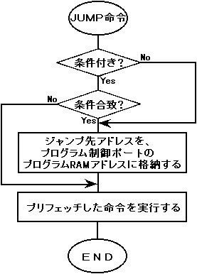
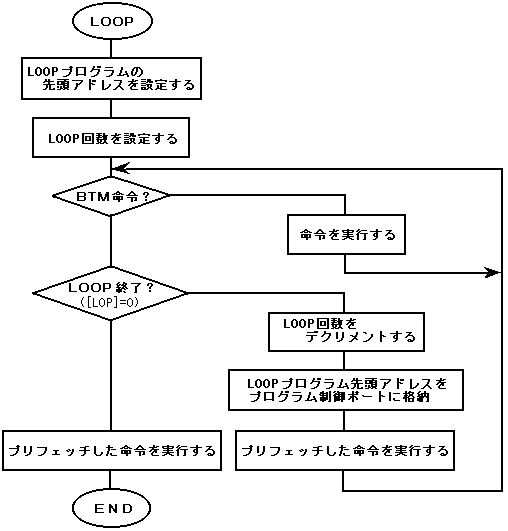

★HARDWARE Manual
★SCUユーザーズマニュアル
★HARDWARE Manual
★SCUユーザーズマニュアル
DSPは、以下の命令に対しては、実際にレジスタをこのように制御し、実行しています。
図4.2 JUMP命令の実行

図4.3 LOOPプログラムの実行

MOV SImm,[CT0] ; DSPデータRAM0転送開始アドレスセット MVI Imm,[RA0] ; 外部メモリ転送開始アドレスセット DMA D0,[MD0],SImm ; D0バスを使用し、DMA転送開始
項 目 | 特 徴 |
フラグのセット | プログラム制御ポートのTOフラグがセットされる。 |
起動と終了 | 外部からのデータレディ信号に従う。この信号により、1ロングワード単位で |
アドレス更新 | 1ロングワード転送される毎に、DSPデータRAM転送アドレス([CTO-3])は1加 |
ホールド状態 | DMA命令のHoldビット(4.5項「命令」DMA命令の部参照)を1にセットすると、 |
MOV SImm,[CT0] ; DSPデータRAM0転送開始アドレスセット MVI Imm,[WA0] ; 外部メモリ転送開始アドレスセット DMA [MD0],D0,SImm ; D0バスを使用し、DMA転送開始
項 目 | 特 徴 |
フラグのセット | プログラム制御ポートのTOフラグがセットされる。 |
起動と終了 | 外部からのデータレディ信号に従う。この信号により、1ロングワード単位で |
アドレス更新 | 1ロングワード転送される毎に、DSPデータRAM転送アドレス([CTO-3])は1加 |
ホールド状態 | DMA命令のHoldビット(4.5項「命令」DMA命令の部参照)を1にセットすると、 |
★HARDWARE Manual
★SCUユーザーズマニュアル